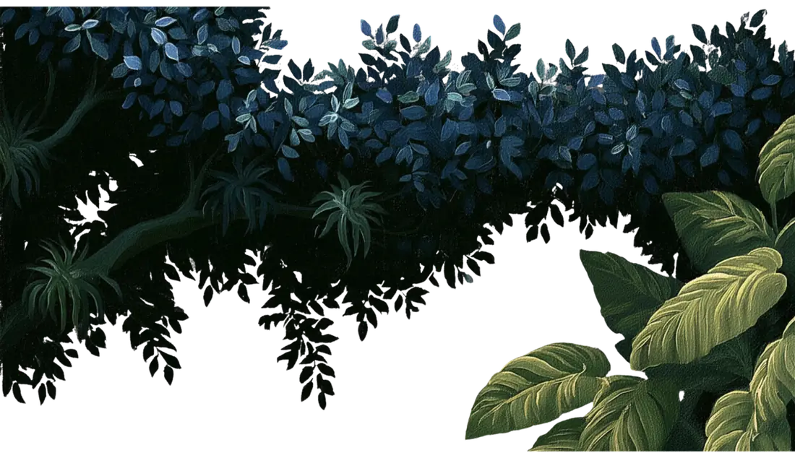
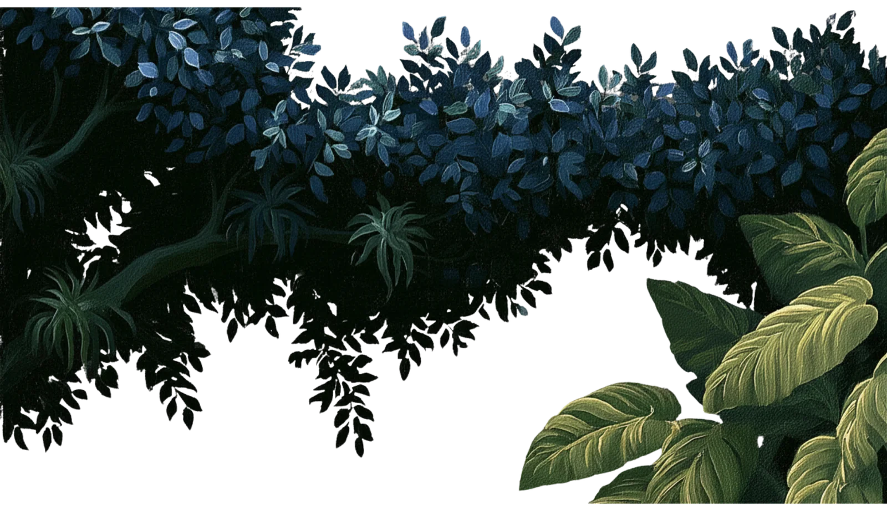
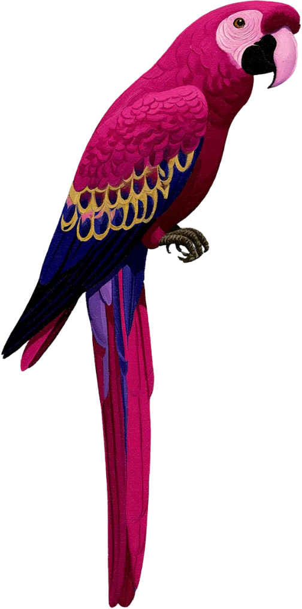
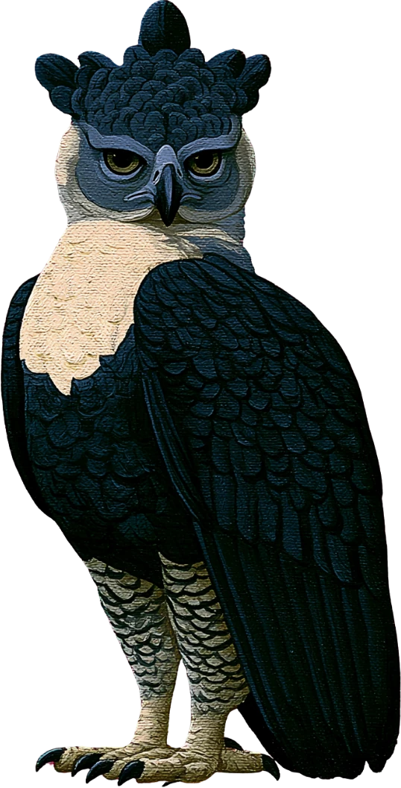
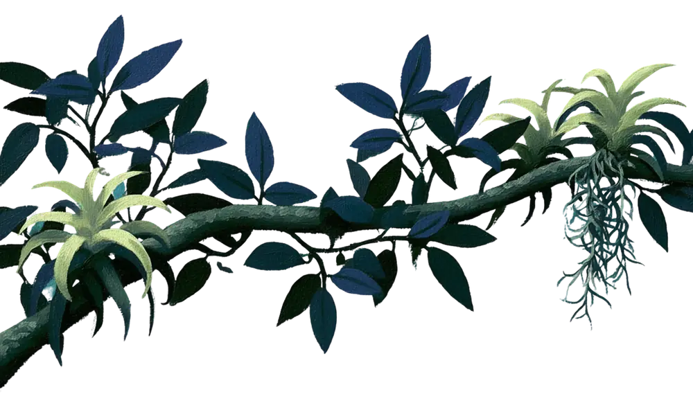
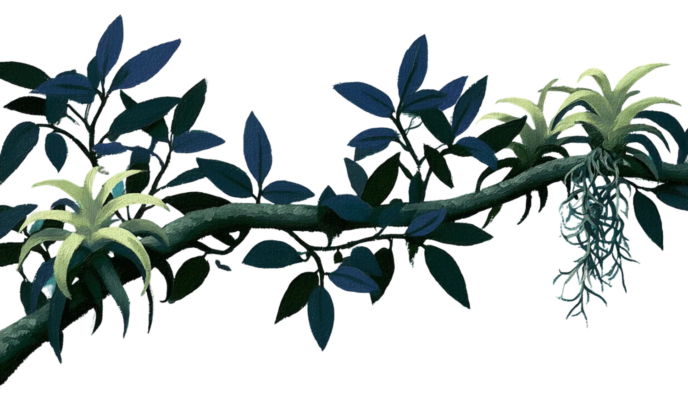
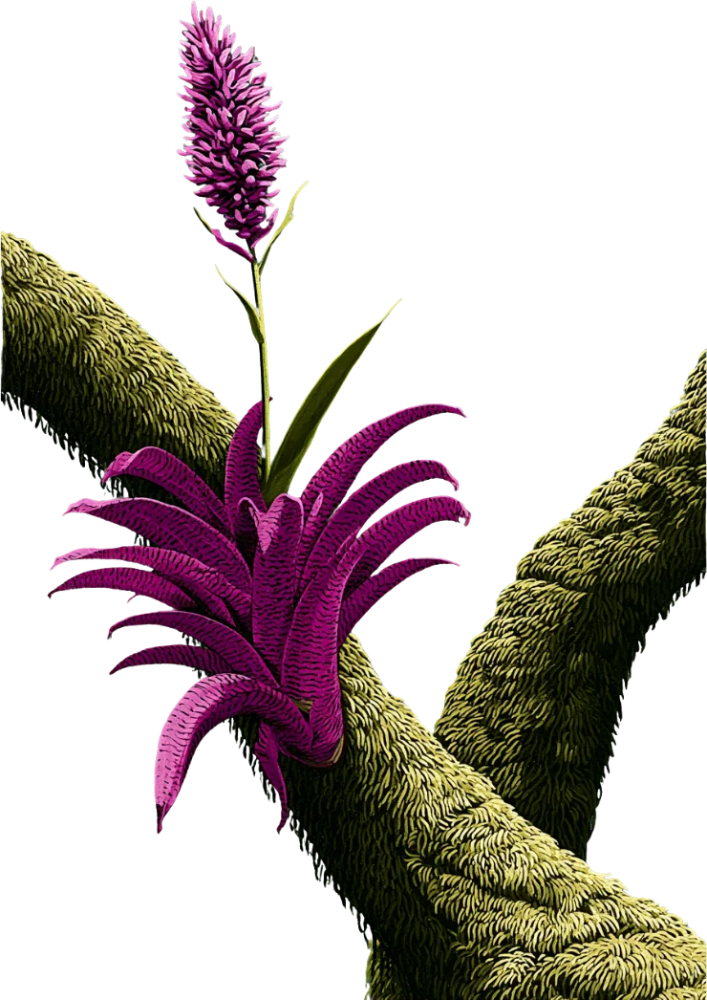
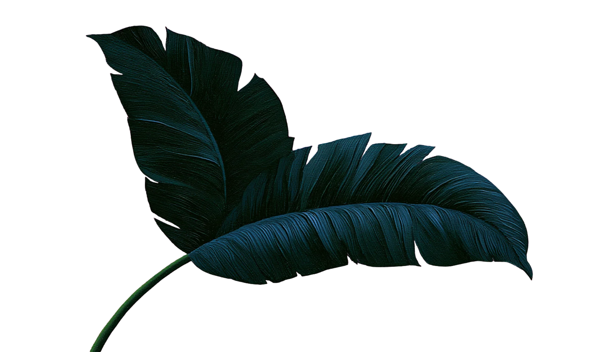
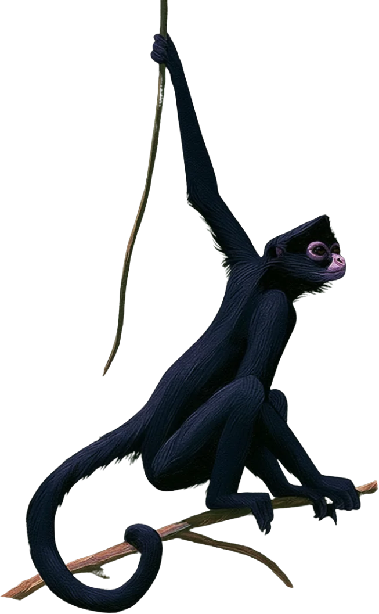
Layer One · The Bright Crown
The Canopy
where the light lands first
Up here the forest is loud and bright. Spider monkeys swing hand over hand, macaws flash red and blue, and nearly every meal the jungle offers starts in these branches. The canopy catches the sun, the rain, and the fruit before anything else gets a turn.
keep scrolling ↓
who lives in the light
In the canopy, everything reaches for the light.

Spider monkey
Ateles geoffroyi
Reads the branches like a map. Swings hand over hand, tail as a fifth limb.
01

Scarlet macaw
Ara macao
Flashes red and blue across the crown. Cracks nuts the others can’t open.
02
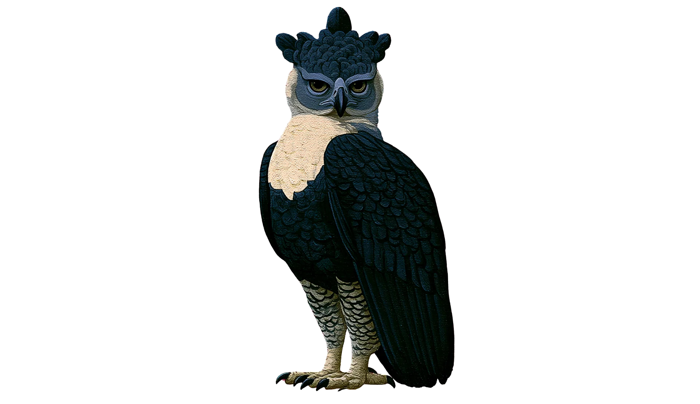
Harpy eagle
Harpia harpyja
The crown’s apex hunter. Drops through the leaves and takes monkeys whole.
03
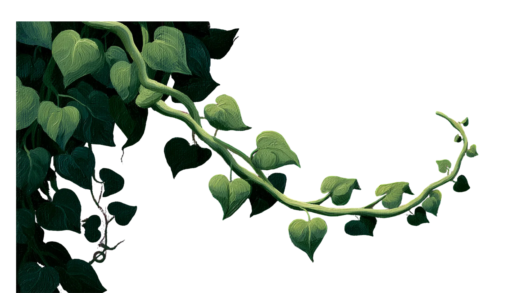
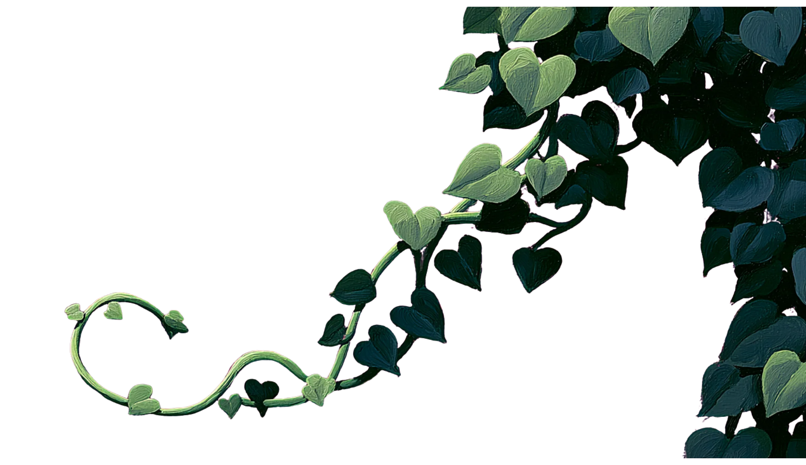
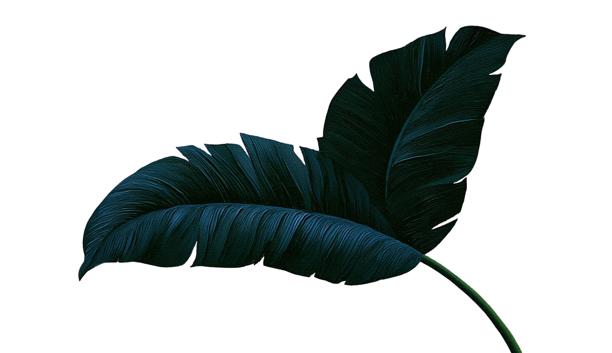